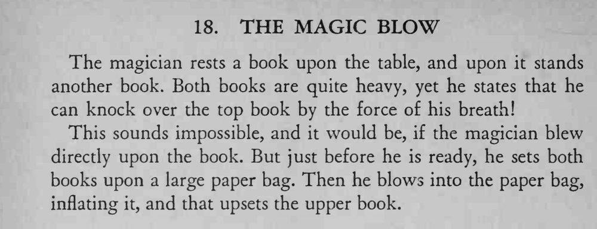

两本厚书叠在桌上，魔术师只用一口气就把上面那本吹倒。
纸袋要够大，书要放在袋口正上方。

The magician rests a book upon the table, and upon it stands another book. Both books are quite heavy, yet he states that he can knock over the top book by the force of his breath! This sounds impossible, and it would be, if the magician blew directly upon the book. But just before he is ready, he sets both books upon a large paper bag. Then he blows into the paper bag, inflating it, and that upsets the upper book.